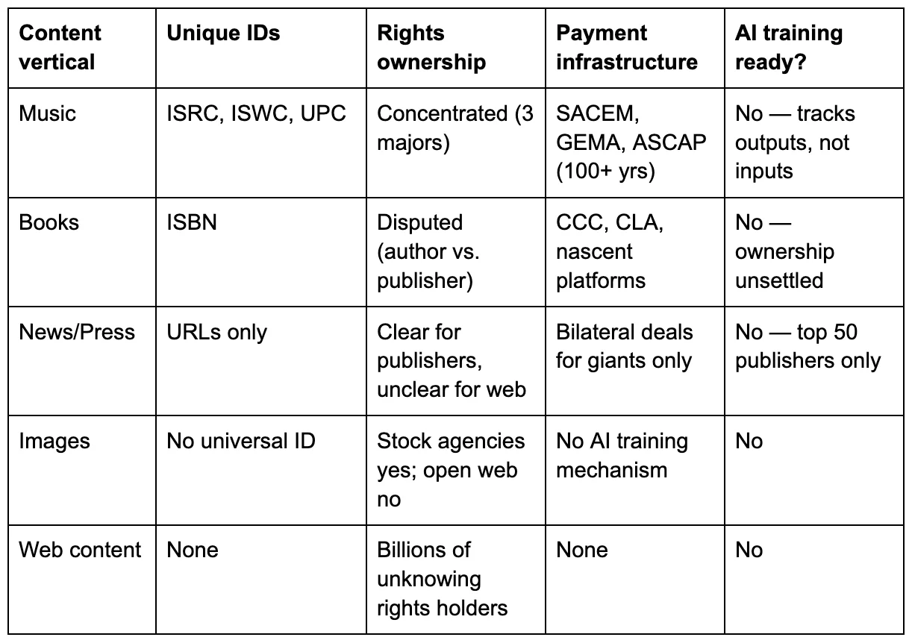

On the morning of March 10, 2026, the Court of Justice of the European Union convened its fifteen-judge Grand Chamber in Luxembourg to hear oral arguments inLike Company v. Google— the first case to ask whether training a large language model on copyrighted text violates EU law [1]. The case turns on a Hungarian news article about a plan to bring dolphins to Lake Balaton. The facts are farcical; the legal questions are not. That same afternoon, two hundred and fifty kilometres west in Strasbourg, the European Parliament voted 460 to 71 to demand that every AI company disclose an itemised list of every copyrighted work used in training, pay retroactive compensation to creators, and register all training data with the EU’s intellectual property office [2].
The Grand Chamber will take a year or more to issue its ruling. The Parliament’s resolution is non-binding. And not a single general-purpose AI model in existence — including Mistral, the company France has staked its AI sovereignty on — could comply with what the MEPs are demanding [3]. Europe is simultaneously asking a court to decide whether AI training is legal and telling AI companies to pay for it regardless. The contradiction is not an accident. It is the opening move of a pattern Europe has repeated for sixty years.
The grievance is real
Unsealed court filings inKadrey v. Metarevealed that Meta downloaded at least 81.7 terabytes from shadow libraries, including LibGen and Z-Library, to train Llama [4]. Employees explicitly identified the data as pirated. An engineer scripted tools to strip the word “copyright” from ebook files. A director of product management wrote that CEO Mark Zuckerberg had personally approved the use, adding that under no circumstances would Meta publicly disclose it [5]. Anthropic agreed to the largest publicly reported copyright settlement in US history — $1.5 billion, roughly $3,000 for each of the approximately 500,000 works pirated from the same shadow libraries [6].
The creative sector’s anger is justified. The Parliament resolution claims Europe’s creative and cultural industries generate 6.9% of EU GDP, though that figure traces to an industry-funded 2010 study using the broadest possible definition; official Eurostat data puts the narrower cultural industries at roughly 4% of value added [7]. Either way, the economic base is substantial, the extraction is real, and the industry has every reason to demand compensation.
The Parliament is right about the problem. The inevitable solution has a 60-year track record of failure.
Why enforcement always fails
The resolution demands that AI providers produce “an itemised list identifying each item of copyright-protected content used for training” [8]. This requirement collides with a technical reality: compliance is impossible at the current scale.
Modern foundation models train on trillions of tokens — the units of text that language models process. Llama 3 used 15 trillion. Qwen 3 used 36 trillion. An estimated 70-90% of these tokens originate from Common Crawl, the largest public web archive used for AI training, which contains 250 billion web pages spanning nearly two decades. A peer-reviewed audit of 1,858 AI training datasets found that license information was missing or unspecified for over 70% of them. Among those where licenses were specified, more than half were miscategorised [9]. The Stanford Foundation Model Transparency Index scored thirteen major AI developers in December 2025 and found that the industry average was 41 out of 100, with training data and training compute as the most opaque areas across the board. Mistral scored 18, the third-lowest of any company assessed and a 37-point drop from the previous year [10].
The problem is accelerating. The fastest-growing source of training data is synthetic text generated by AI models and fed back into training pipelines. If training on copyrighted text requires compensation, does synthetic data generated by rephrasing copyrighted text inherit the liability? The seed documents are copyrighted. The teacher models that rephrased them were trained on copyrighted data. The output is designed to be sufficiently transformed that it no longer matches the original, which is either a legitimate transformation or a laundering operation, depending on which side of the table you sit. No court has ruled. No collecting society has a position. And the volume of synthetic training data is growing faster than any other category.
The impossibility runs deeper than missing metadata. The Parliament’s demand implicitly assumes that a rights management infrastructure exists — or could be built — to identify every copyrighted work, determine who holds what rights, and route payments accordingly. No such infrastructure exists in any content vertical. Not one.
The music industry comes closest. It has unique identifiers for recordings (ISRC), compositions (ISWC), and releases (UPC). It has collecting societies — SACEM since 1851, GEMA since 1903, ASCAP since 1914 — with over a century of experience routing payments. It has DDEX, the metadata exchange standard that took from 2006 to the present to become the industry’s communication backbone [12]. And it still cannot track what AI models were trained on. DDEX’s latest extension, adopted by Spotify in September 2025, adds flags for AI involvement in musicoutputs— whether a track was made with AI. Tracking AIinputs— what a model ingested during training — is a different problem entirely, and one DDEX was never designed to solve [13].
Books have ISBNs, but an unsettled ownership crisis. The Authors Guild’s position is unambiguous: AI training rights are “a right entirely unrelated to publishing” that publishers do not hold unless separately negotiated [14]. Yet publishers are licensing anyway — HarperCollins at $5,000 per title to Microsoft, Wiley for $23 million to an undisclosed AI company — often without asking the authors whose rights they claim to represent [15]. Who can grant a license? The question is genuinely unresolved, and it preemptively blocks any systematic licensing framework.
News publishers have bilateral deals for the giants — OpenAI paid News Corp over $250 million, the Financial Times reported $5-10 million per year, and nothing for everyone else [16]. Microsoft launched a Publisher Content Marketplace in early 2026, but its roster includes only news and magazine outlets: Business Insider, Condé Nast, Hearst, and the Associated Press. No book publishers. No academic presses [17]. The RSL standard, launched in September 2025 as an “ASCAP for the web,” had attracted 1,500 publisher endorsers by early 2026 and partnered with Cloudflare and Akamai for enforcement — but not a single major AI company has committed to honouring it [18].
Images have stock licensing that doesn’t cover training. Web content — blogs, forums, social media, code repositories, the vast majority of what Common Crawl actually contains — has no identifiers, no rights registry, no payment infrastructure, and no unit of consumption that could map to a royalty. Full disclosure: I was VP Engineering at Digiplug, a digital music distributor, when the industry was adopting DDEX (2007-2009). I know firsthand how painful metadata standardisation is even in the best-case vertical — three major labels, a century of collecting societies, a finite catalogue. The content industry as a whole lacks these advantages [19].

The Parliament treats "copyrighted content" as a single category. Five broken verticals, none of which can support itemised disclosure at AI training scale. The most mature — music, with its unique identifiers, its three major labels, its century-old collecting societies, and its twenty-year-old metadata standard — still cannot track what trains an AI model. The least mature — general web content, which constitutes the overwhelming majority of what Common Crawl actually contains — has nothing [21].
Three systems, three outputs
The United States is answering the same question through litigation. In June 2025, Judge William Alsup ruled inBartz v. Anthropicthat training AI models on legally acquired books is “quintessentially transformative” and protected by fair use — while simultaneously holding that downloading pirated copies from shadow libraries is “inherently, irredeemably infringing” [40]. Two days later, Judge Vince Chhabria reached the same conclusion for Meta’s Llama models inKadrey v. Meta[41]. An earlier case,Thomson Reuters v. Ross Intelligence, denied fair use when the AI product directly competed with the copyrighted source [42].
The emerging American framework is contextual: train on legal copies and transform the content, and you’re protected. Pirate it or build a substitute, and you’re not. It’s messy, slow, and case-specific. It also produces commercially functional outcomes, because each ruling clarifies a boundary that the market can price. More than seventy AI copyright cases are now pending in US federal courts, according to the US Copyright Office’s litigation tracker [43]. The first appellate decisions — the Third Circuit in Thomson Reuters and the Ninth Circuit inDoe v. GitHub— are expected in 2026. The US is building an AI copyright law the way it builds most technology law: through friction, precedent, and settlement.
China is not building a copyright framework. It is training. China now accounts for roughly 1,500 of the world’s 3,750 publicly released large language models. DeepSeek, Qwen, and their derivatives dominate open-weight rankings [44]. None discloses their training data. China’s Copyright Act technically contains no text-and-data-mining exception, meaning AI training requires permission — but enforcement is minimal, and state priorities overwhelmingly favour AI acceleration over rights holder compensation. Once released, open-weight models propagate globally and operate beyond any jurisdiction’s reach. You cannot levy a downloaded weight file.
The divergence is widening. The US builds and litigates. The EU regulates and taxes. China builds and ignores. And the gap between them — in cost structure, in innovation speed, in competitive position — grows with each cycle.
The Levy Ratchet
Europe has been here before. Every wave of digital disruption since the 1960s has triggered the same structural sequence — call it the Levy Ratchet.
Act 1: rights holders demand maximalist enforcement.
Act 2: enforcement proves impossible.
Act 3: a flat-rate levy collected by incumbent intermediaries absorbs the function that enforcement was supposed to serve. The ratchet only turns one way. No European copyright levy has been repealed once established.
When cassette tapes made home recording possible, Germany introduced the world’s first private copy levy in the 1960s. France followed in 1985. Rather than monitor every home recording — an impossible task — lawmakers imposed a surcharge on blank media, collected by the same organisations that represented rights holders. The enforcement problem was sidestepped, not solved [20].
When file sharing exploded in the 2000s, France created HADOPI — the Haute Autorité pour la Diffusion des Œuvres et la Protection des droits sur Internet. It was the most ambitious digital copyright enforcement system ever attempted in Europe, and the numbers it produced deserve a full accounting. Over its decade of existence, HADOPI consumed €82 million in public subsidies and collected a total of €87,000 in fines — a ratio of 942 euros spent per euro recovered [22]. The enforcement funnel tells the story better than any ratio: 13 million first-strike warning emails sent to alleged file-sharers, 6,994 dossiers transmitted to prosecutors, 517 court judgments, one internet disconnection order — which was never enforced because the French government abolished the disconnection penalty by decree five weeks after it was imposed [23]. The pirates, meanwhile, migrated from monitored peer-to-peer networks to VPNs and streaming services that HADOPI’s architecture could not reach. HADOPI was absorbed into Arcom in January 2022, its graduated response mechanism preserved on paper, and its reputation as a bureaucratic catastrophe intact.
What happened next is the structural finding. HADOPI failed as enforcement — that is, Act 2 of the pattern. But the private copy levy succeeded as a collection — that is, Act 3. The levy didn’t replace HADOPI; it absorbed the function HADOPI was supposed to serve. While HADOPI was sending warning emails to no effect, the levy expanded quietly to cover smartphones, tablets, USB drives, and external hard drives, each new device category adding a surcharge at the point of sale. By 2021, France alone was collecting roughly €300 million per year through this mechanism — nearly 3,500 times what HADOPI collected in its entire decade of operation [24]. The enforcement failed. The tax worked.
One objection is immediate: the enforcement target has changed. HADOPI tried to police fifty million anonymous file-sharers. AI copyright enforcement targets perhaps fifty identifiable, well-capitalised companies. You can name them. You can serve them. You can fine them — and the $1.5 billion Anthropic settlement proves that litigation works. But enforcement that can reach the companies does not solve the problem that no one — not the companies, not the regulators, not the collecting societies — can identify what those companies owe. The rights infrastructure gap is independent of the enforcement target. You can find the fifty companies. You still can’t tell them what they trained on.
When Google News began displaying snippets from European publishers, Germany passed an ancillary copyright law in 2013. It generated no meaningful revenue — Axel Springer, the law’s most vocal backer, eventually granted Google a free licence after traffic plummeted. Spain passed a stricter version; Google shut down Google News in the country for eight years, costing Spanish publishers an estimated €10 million annually [25]. The EU-wide version, Article 15 of the 2019 Copyright Directive, has generated some licensing deals — but overwhelmingly between large publishers and large platforms, leaving smaller outlets on the outside.
The pattern repeats: enforcement proves impossible, and the collecting societies that lobbied for it in the first place become the agents of a levy that doesn’t require enforcement at all. The levy is collected at the point of commercial activity — manufacturing, importing, selling — not at the point of content use.
The Levy Ratchet may not be limited to copyright. Nine of the ten largest GDPR fines have been imposed on companies headquartered outside the EU [45]. The AI Act’s compliance burden falls on companies that register models in the EU market, not on open-weight models downloaded from Chinese repositories. The sequence — maximalist demand, selective enforcement, convergence on a cost borne by compliant companies — looks familiar across European digital regulation. Whether the Ratchet generalizes beyond copyright is a question for another piece. The country that invented every turn of it is a good place to start.
The levy machine already exists
The same organisations now pushing for AI copyright enforcement operate the largest rights-revenue collection infrastructure in Europe. GESAC, the umbrella body lobbying hardest for the Parliament’s resolution, represents over one million creators through 32 collecting societies across Europe. SACEM manages 106 million works and collects France’s private copy levy. GEMA won a landmark ruling against OpenAI in Munich in November 2025 [26]. Copie France is the entity that physically collects the levy on every device capable of storing copies sold in France — €14 excluding tax on every smartphone [27].
Private copy levies collected over €1 billion annually across Europe as of 2018, the most recent comprehensive count. Germany contributed €332.5 million and France €277.5 million, together accounting for 60% of the global total [28]. Seventy-five countries have private copy levy systems [28]. The infrastructure to collect flat-rate payments from technology companies, route them through collecting societies, and distribute them to rights holders doesn’t need to be built. It’s been running for sixty years.
This context makes the Voss contradiction legible. Axel Voss — the same MEP who authored the 2019 Copyright Directive and now authored the 2026 AI copyright resolution — proposed in the explanatory memorandum to his draft report that the EU impose “an immediate, simple, flat-rate copyright fee” of 5 to 7 percent of global turnover [29]. The resolution he then authored and shepherded to a 460-71 vote explicitly rejects “a global licence for providers to train their genAI models in exchange for a flat-rate payment” [30]. This is not a contradiction. It is a negotiating structure. The resolution is the maximalist opening position. The levy is the known landing zone. The collecting societies know exactly what they want: a new taxable event within their existing collection infrastructure.
The Munich ruling accelerates the timeline. The Landgericht München found that when copyrighted works become “memorised” — reproducibly embedded in model weights such that the model can regenerate them — the training process constitutes reproduction under German copyright law [31]. The court drew an analogy to MP3 compression: just as an MP3 stores audio in compressed mathematical form, a language model stores text in statistical form, and both constitute reproduction. If training is reproduction, then compensation requires a new legislative act — and the collecting societies’ existing levy architecture is the readiest model for what that legislation would look like. The institutional infrastructure is already built. Both parties have appealed [32]. The legal pathway from GEMA’s Munich courtroom to SACEM’s collection infrastructure requires one legislative step, and the Commission is already preparing it.
The Commission is moving faster than expected. Commissioner Virkkunen has committed to presenting an evaluation report and proposal for review of the Copyright Directive by December 2026 [33]. The CJEU Grand Chamber heard theLike Companycase on March 10. An Advocate General opinion is expected within months. The legislative window between the Parliament’s political signal and the Commission’s operational proposal is narrowing.
Who pays, who doesn’t
A levy on AI services offered in the EU market would reach OpenAI, Google, Anthropic, and Mistral — any company charging for API access, subscriptions, or enterprise licences to European customers. It doesn’t require tracking individual works. It’s administratively simpler than enforcement. This is the strongest argument for the levy, and it’s why the collecting societies want it.
But it doesn’t reach the most competitive open-source models. DeepSeek R1, Qwen 3, and their combined 170,000-plus derivatives are available as downloadable weights [34]. A European company that downloads Qwen and runs it on-premises for internal use pays no levy — there is no EU-market commercial transaction to attach it to. A European company that uses the Claude API for the same task does pay. The asymmetry narrows, however, if the levy attaches to deployers rather than model providers: a company building a commercial product on self-hosted Qwen and selling it to European customers would have a taxable transaction. The AI Act already distinguishes between providers and deployers. Whether the levy follows that architecture will determine how much of the self-hosted escape is real. Either way, the levy creates a structural incentive to move inference away from commercial APIs and onto self-hosted infrastructure — and, as noted above, roughly 1,500 of the world’s publicly released large language models originate in China [35]. None discloses their training data. None maintains GDPR representatives in Europe. None has signed the EU’s General-Purpose AI (GPAI) Code of Practice.
The pattern is familiar: rules for rule-followers. The levy applies to companies that operate within EU market structures — the companies that were already the most reachable, the most transparent, the most willing to negotiate. The companies that justify the strongest version of the creative industry’s grievance — those that train on everything, disclose nothing, and operate beyond any enforcement perimeter — are structurally outside the levy’s reach.
Mistral’s position is the sharpest illustration. Europe’s AI flagship scored 18 out of 100 on the Stanford transparency index — lower than DeepSeek, lower than Meta, lower than every company except Midjourney and xAI [36]. Its co-founder Guillaume Lample orchestrated the download of approximately 70 terabytes from LibGen while at Meta, reportedly telling colleagues that “everyone uses LibGen” [37]. He left Meta and co-founded the company France has championed as its answer to OpenAI. Mistral has not disclosed its training datasets, and its copyright policy addresses future opt-outs without accounting for past ingestion.
The irony is systemic, not personal. The company that built its training corpus using the same methods the Parliament wants to punish will pay whatever levy the collecting societies extract — because it sells API access on the EU market. DeepSeek, whose training data practices are entirely opaque, will not. The levy taxes the business model, not the behaviour.
The levy is a copyright instrument. The competitive threat from Chinese open-weight models is an industrial policy problem. These are different departments, and they don’t talk to each other.
Over a hundred major European companies — including Airbus, Siemens, ASML, BNP Paribas, and Mistral itself — demanded a two-year pause on AI Act enforcement in July 2025. The Commission refused [38]. The levy will arrive on top of the AI Act’s existing compliance obligations. The Bruegel think tank captured the structural bind precisely: “Full application of the law would endanger EU access to the best AI models and services and erode competitiveness” [39].
The verdict
The EU Parliament’s resolution will not produce the enforcement it demands. No technology exists to generate itemised disclosure at trillion-token scale. No rights management infrastructure — in music, books, news, images, or web content — can support systematic licensing for AI training. The Levy Ratchet will turn again: maximalist demand, enforcement failure, convergence on a levy.
The levy will be collected by the same organisations that have been collecting private copy levies since the 1960s — SACEM, GEMA, Copie France, and the 32 collecting societies under the GESAC umbrella. It will apply to AI services sold on the EU market. It will not reach Chinese open-source models downloaded and run locally. It will make self-hosted open-weight models from non-enforcing jurisdictions structurally cheaper than European API services. The creative industry will receive a revenue stream. Under existing French law, one quarter of private copy levy collections never reaches a creator — it funds “cultural activities” that the collecting societies themselves define and administer [24]. Individual creators, especially small ones without collective representation, will see a fraction of a fraction. The levy serves institutions better than individuals — but it is the only mechanism that generates any revenue at all for a right that cannot otherwise be enforced. The levy may be small. The pattern it reveals is not.
This is not a conspiracy and it is not necessarily wrong. A levy is a pragmatic response to an enforcement impossibility. It generates revenue for creators when no licensing infrastructure exists to route payments based on actual use. The private copy levy has funded European creative production for decades.
The question is not whether the AI levy is justified — the grievance is real and the money has to come from somewhere. The question is whether Europe understands what it is choosing. It is choosing a tax on AI services sold by compliant companies, collected by incumbent intermediaries, in a market where the most competitive alternatives are free, open-weight, and Chinese. If the CJEU rules inLike Companythat the text-and-data-mining exception already covers AI training — a plausible outcome — the levy becomes unnecessary and the Levy Ratchet breaks. The structural bet of this analysis is that it won’t.
If you are evaluating an AI investment in Europe, price the levy into your margin model now — 5 to 7 percent of AI-attributed revenue is the political anchor, the landing zone will be lower, and the structure is more likely to follow the private copy precedent of a per-unit fee than a revenue share. Either way, collecting societies do not negotiate downward. If you are choosing between an API provider and self-hosted open weights, the levy widens the cost gap in favour of self-hosting — and every open-weight model from a non-enforcing jurisdiction becomes structurally cheaper to operate in Europe than every API from a compliant one. If you are building an AI company in the EU, the Levy Ratchet is not a risk to monitor. It is a cost to budget.
The United States will continue building the common law of AI copyright case by case through litigation—a slower process that produces messier, more context-specific, and ultimately more commercially functional outcomes. China will continue training on everything and disclosing nothing, because neither its legal framework nor its strategic priorities creates any incentive to do otherwise. And Europe will continue doing what it has always done. It will regulate. It will tax. And it will wonder why the technology gets built somewhere else.
In Europe, the only certainty is not just death and taxes. It’s death by taxes.
Notes
[1] Case C-250/25,Like Company v. Google Ireland Limited, referred to the CJEU by the Budapest Környéki Törvényszék on April 3, 2025. Assigned to the Grand Chamber. Oral hearing held March 10, 2026. The case asks whether chatbot output displaying text similar to press publisher content constitutes reproduction or communication to the public, and whether the TDM exception under Article 4 of Directive 2019/790 applies to AI training. SeeEuropean Copyright Society opinion(CREATe, March 3, 2026) for detailed analysis of the questions referred. Case file:InfoCuria.
[2] European Parliament,“Protecting copyrighted work and the EU’s creative sector in the age of AI,”press release, March 10, 2026. Vote: 460 in favour, 71 against, 88 abstentions. Report A10-0019/2026, rapporteur Axel Voss (EPP, Germany). This is a non-binding own-initiative report, not legislation.
[3] Stanford Foundation Model Transparency Index, December 2025: average score 41/100 across 13 companies. Companies are “most opaque” about training data. Of the six companies the FMTI team assessed manually (because they did not submit transparency reports), Mistral scored 0 on the entire upstream domain, which covers training data and compute. See Wan et al.,“The 2025 Foundation Model Transparency Index,”arXiv:2512.10169. The MIT Data Provenance Initiative (Longpre et al.,“A Large-Scale Audit of Dataset Licensing and Attribution in AI,”Nature Machine Intelligence, vol. 6, pp. 975-987, August 2024) found license information missing for over 70% of 1,858 finetuning datasets audited.
[4] Kadrey et al. v. Meta Platforms Inc., Case No. 3:23-cv-03417-VC, N.D. Cal. Unsealed exhibits include internal Meta communications identifying LibGen as “a dataset we know to be pirated” and assessing its use as “medium-high legal risk.”
[5] Internal Meta email from Sony Theakanath (Director of Product Management) to VP Joelle Pineau. SeeTechCrunch, January 9, 2025 and Rolling Stone coverage of the unsealed filings. Engineer Nikolay Bashlykov wrote scripts to strip copyright markers from ebook files.
[6] Bartz et al. v. Anthropic PBC, Case No. 3:24-cv-05417-WHA, N.D. Cal. Settlement of $1.5 billion — the largest publicly reported copyright settlement in US history — preliminarily approved September 25, 2025 by Judge William Alsup. Final approval hearing scheduled April 23, 2026. Covers approximately 500,000 works from LibGen and PiLiMi datasets. The settlement does not create an ongoing licensing regime and is limited to past conduct through August 25, 2025. On the fair use question: Judge Alsup ruled in June 2025 that AI training on legally acquired books is “quintessentially transformative” and protected by fair use. Pirated copies were deemed “inherently, irredeemably infringing.”
[7] The EP resolution (Recital C) cites 6.9% of GDP. This figure traces toTERA Consultants, “Building a Digital Economy”(2010), commissioned by the International Chamber of Commerce/BASCAP, using a broad definition that includes interdependent and non-dedicated support industries (TV/radio manufacturers, general retail, transport). Core creative industries alone accounted for approximately 4.5%. The European Commission’s DG GROW currently cites approximately 3.95% of EU value added.Eurostat data(2022) places cultural enterprises’ value added at 2.0% of the total corporate economy.
[8] Report A10-0019/2026, operative text. The resolution also calls on the Commission to examine retroactive remuneration for past use, create a EUIPO-managed register, and introduce a rebuttable presumption that unaccounted-for works were used in training.
[9] Longpre et al.,“A Large-Scale Audit of Dataset Licensing and Attribution in AI,”Nature Machine Intelligence, vol. 6, pp. 975-987, August 2024. The 70%+ figure refers to the proportion of 1,858 individual finetuning datasets (decomposed from 44 widely-used data collections) whose licenses were listed as “Unspecified” on major hosting platforms: GitHub 72%, Hugging Face 69%, Papers with Code 70%. Among datasets with specified licenses, miscategorisation rates exceeded 50% cross-platform, rising to 66% on Hugging Face specifically. Peer-reviewed.
[10]Stanford FMTI 2025: Mistral scored 18/100 (down from 55 in 2024). Bottom cluster alongside Midjourney (14) and xAI (14). Mistral scored 0 on the upstream domain (training data, compute) and 0 on model information. The FMTI team prepared Mistral’s transparency report because Mistral did not submit one. Industry average: 40.69/100. The only demonstrably copyright-clean training dataset, the KL3M project (see footnote [11]), is orders of magnitude too small for a general-purpose model.
[11] TheKL3M Data Project(273 Ventures) contains 132 million documents from public-domain and government sources. Designed for legal domain applications, not general-purpose language modelling.
[12]DDEX(Digital Data Exchange), founded 2006. Approximately 100 members, over 15,000 implementation licenses issued. Six families of standards covering release delivery, sales reporting, works notification, licensing, and studio metadata.
[13] DDEX ERN v4.3.1 adds optional AI disclosure flags.Spotify announced supportSeptember 25, 2025. The standard enables labels and distributors to declare AI involvement in recordings (AI-generated vocals, AI-assisted mixing, etc.). This tracks AI in outputs, not AI training inputs.
[14] Authors Guild,“AI Licensing for Authors: Who Owns the Rights and What’s a Fair Split?”, November 11, 2025: “Licensing for AI training is a right entirely unrelated to publishing, and is not a right that can simply be tacked onto a subsidiary-rights clause. It is a right reserved by authors.”
[15] HarperCollins/Microsoft: $5,000 per title, author opt-in, 3-year term, select nonfiction backlist. Wiley: $23 million to an undisclosed tech company. See Publishers Weekly and Authors Alliance analysis. The Authors Alliance notes that “with few exceptions (a notable one being Cambridge University Press), publishers have not bothered to ask their authors.”
[16] OpenAI licensing deals: News Corp ($250M+ over 5 years, per Wall Street Journal), Wiley ($44M). Financial Times terms were not publicly disclosed; estimates range from $1-5M/year (The Information) to $5-10M/year (other reporting). Anthropic settlement ($1.5B) is distinct — it compensated for piracy, not a licensing arrangement.
[17] Microsoft Publisher Content Marketplace (PCM), launched February 2026. Partners: Business Insider, Condé Nast, Hearst, Associated Press, USA TODAY, Vox Media. Analysis:New Publishing Standard, February 11, 2026.
[18]RSL(Really Simple Licensing), launched September 10, 2025. 1,500+ publisher endorsers including Reddit, Yahoo, Medium, Quora, O’Reilly Media. CDN enforcement partnerships with Cloudflare, Akamai, Fastly. No major AI model developer has committed to honouring RSL files as of March 2026. See Crowell & Moring LLP analysis (January 2026) noting that RSL “acts largely as a request and instruction system” with no binding legal force.
[19] Disclosure: I was VP Engineering at Digiplug, a digital music distribution company, during the DDEX adoption period. I also spent three years as Chief Evangelist at Hugging Face, which hosts models from Mistral, Meta, Alibaba, and others directly affected by the rules discussed in this piece.
[20] Germany introduced the world’s first private copy levy with the 1965 copyright act (Urheberrechtsgesetz). France followed with the loi du 3 juillet 1985 (loi Lang). SeeCISAC Private Copying Global Study 2020for the global evolution of levy systems.
[21] Even mechanisms weaker than itemised disclosure have failed. Spain’s Ministry of Culture proposed a Royal Decree on extended collective licensing (licencias colectivas ampliadas) for AI training under Article 12 of Directive 2019/790. The decree would have allowed collecting societies (SGAE, DAMA) to grant non-exclusive licenses to AI companies without individual creator consent. It was withdrawn on January 28, 2025, after over 30 cultural organisations campaigned against it under the slogan “Así, no.” Creators’ opposition was directed at the specific terms — inadequate remuneration guarantees and absence of individual consent requirements — rather than at collective licensing as a mechanism. The Ministry cited “falta de consenso por parte del sector cultural.” Source:International Publishers Association, February 25, 2025; Infobae/EFE, January 28, 2025.
[22] HADOPI budget: €82 million in cumulative public subsidies (programme 334, “Livre et industries culturelles”), 2009-2019. Fines: €87,000 cumulative through 2019, per HADOPI Rapport Annuel 2019, foreword by president Denis Rapone: “Depuis 2011, le montant total cumulé des amendes prononcées et portées à la connaissance de la Commission est de 87.000 euros.” Aggregation byNext INpact, confirmed by iGeneration, CCFI, and Europe 1.
[23] HADOPI enforcement funnel: ~13 million first-strike warning emails sent (Rapone: “treize millions d’avertissements”); 6,994 dossiers transmitted to prosecutors; 517 court judgments (Next INpact final tally); 1 internet disconnection order, issued June 3, 2013 by the Tribunal de police de Montreuil. The penalty was abolished byDécret n° 2013-596of July 8, 2013, following the Lescure Report. Under retroactivity of more lenient criminal law, the suspension was immediately unenforceable. HADOPI merged into Arcom on January 1, 2022 (Loi n° 2021-1382 du 25 octobre 2021).
[24] Copie France collections: approximately €298 million in 2021, €285 million in 2022, €234 million in 2023, €246 million in 2024. Sources: MacGeneration/L’Informé (2022 figures),Next.ink(2024 figures), TorrentFreak (2021 figures). The levy applies to smartphones (€14 HT for devices above 64 GB), tablets, hard drives, USB keys, and other storage media. The tariff is set by theCommission pour la rémunération de la copie privéeunder Décision n°18 (September 5, 2018). By law (CPI, Article L.324-17), 75% of collections are distributed to rights holders; 25% funds “cultural activities” administered by the collecting societies.
[25] Germany’s ancillary copyright (Leistungsschutzrecht für Presseverleger, 2013): Axel Springer gave Google a free licence after traffic declined. Spain’s Canon AEDE (2014): Google shut down Google News in December 2014, returned in 2022 after Spain transposed the EU Copyright Directive, which replaced the national law. Article 15 ofDirective 2019/790(the EU-wide “press publishers’ right”) has produced some licensing agreements but primarily benefits large publishers.
[26]GEMA(Gesellschaft für musikalische Aufführungs- und mechanische Vervielfältigungsrechte) traces its institutional lineage to the founding of AFMA in 1903; the current entity was named GEMA in 1947 after a period of state control (STAGMA, 1933-1945). It represents approximately 100,000 members and manages over 4 million works in Germany.GESACrepresents over 1 million creators through 32 collecting societies.SACEMmanages 106 million works in its global repertoire (per SACEM’s 2023 annual data; the searchable database lists 96 million “most recently used” works).
[27]Copie Francesmartphone levy: €14 HT for smartphones above 64 GB capacity, per Décision n°18 of the Commission copie privée (September 5, 2018). With 20% VAT: approximately €16.80 TTC.
[28]CISAC Private Copying Global Study 2020(using 2018 data): €1.019 billion collected across Europe, representing 90% of the global total of €1.046 billion. Germany: €332.5 million. France: €277.5 million. No updated comprehensive study has been published since.
[29] Axel Voss, Explanatory Statement, Draft Report on Copyright and Generative Artificial Intelligence (2025/2058(INI)), documentPE775.433v01-00, dated 27 June 2025, pp. 13-14: “the European legislator or the European Commission should, pending the introduction of an appropriate provision to address this problem, establish an immediate, simple, flat-rate copyright fee for this use of 5 to 7% of global turnover in order to compensate for the added value that these businesses generate using the data of European creatives and to ensure it remains in Europe.”
[30] Report A10-0019/2026, adopted by JURI Committee January 28, 2026 (17-3-2) and by plenary March 10, 2026 (460-71-88). Paragraph 21 calls for fair remuneration “but not through a global licence for providers to train their genAI models in exchange for a flat-rate payment.” The resolution rejects the format Voss himself proposed.
[31] Landgericht München I, Case 42 O 14139/24, November 11, 2025 (GEMA v. OpenAI). The court distinguished between creating a training corpus (covered by the TDM exception under §44b UrhG) and the training process itself, where copyrighted works become “memorised” — meaning reproducibly embedded in model parameters. This memorisation constitutes reproduction under §16 UrhG, which implements Article 2 of the InfoSoc Directive (2001/29/EC) — an EU-harmonised provision, giving the reasoning persuasive authority beyond Germany. The court analogised to MP3 compression: both store protected content in compressed mathematical form and both constitute reproduction. Note: the existing private copy exception (Article 5(2)(b) InfoSoc Directive, §53 UrhG, CPI L.122-5) applies to copies made by natural persons for private, non-commercial use. Commercial AI training does not fit within this exception. The reproduction finding creates a legal basis for compensation, but applying the levy model to AI would require new or extended collective licensing legislation — not automatic application of the existing private copy framework.
[32] GEMA filed Berufung (appeal) on December 8, 2025, to the Oberlandesgericht München (Case Az.: 6 U 3662/25 e), challenging the dismissal of its personality-rights claims. OpenAI subsequently filed a cross-appeal on the copyright findings. The court rejected both parties’ suggestion to refer questions to the CJEU.
[33] Commissioner Henna Virkkunen,written answer to parliamentary question E-000528/2025, April 4, 2025: “The Commission will examine the application of these rules in the context of the review of the directive, which is due no sooner than 7 June 2026.” She confirmed before the CULT Committee in October 2025 that the evaluation report and proposal for review would be presented by December 2026.
[34] DeepSeek R1 was trained on 14.8 trillion tokens from undisclosed sources. Qwen 3 used approximately 36 trillion tokens. DeepSeek’smodel disclosure documentprovides no information about training data provenance or copyright status. Note on self-hosting costs: the levy’s competitive impact is most significant at large inference volumes where self-hosting is already cost-competitive with API providers. At small scale, the non-levy costs of self-hosting (GPU infrastructure, MLOps, security, compliance) typically exceed API costs regardless of any levy.
[35] Estimates of Chinese LLM count vary by source. The figure of approximately 1,500 Chinese LLMs out of ~3,750 total publicly released models is drawn from multiple tracking sources as of mid-2025. Qwen derivative count: TechNode reported over 100,000 in April 2025; the Arcee Trinity Large technical report (February 2026) citesover 170,000 on Hugging Face.
[36]Stanford FMTI 2025scores: IBM 95, Writer 73, AI21 Labs 66, Anthropic 46, Google 45, Amazon 39, OpenAI 35, DeepSeek 33, Meta 31, Alibaba 26, Mistral 18, Midjourney 14, xAI 14. Mistral is the lowest-scoring European company and lower than every Chinese company assessed.
[37] Guillaume Lample, co-founder of Mistral AI, orchestrated the download of approximately 70 terabytes from LibGen while employed at Meta in 2022, according to unsealed filings in Kadrey v. Meta and reporting byMediapart(December 22, 2025). The quote “Tout le monde utilise LibGen” is attributed to Lample in these filings. Separately, a Meta internal email referenced “OpenAI and Mistral” using LibGen — but qualified this as “through word of mouth,” not direct evidence. Mistral has not categorically denied using LibGen. Covered by Mediapart,Next.ink, Siècle Digital, Actualitté, and Clubic.
[38] The EU AI Champions Initiative letter requesting a two-year AI Act enforcement pause was signed by over 110 European companies including Airbus, ASML, Siemens, BNP Paribas, and Mistral. SeeSiliconANGLE, July 3, 2025. The Commission rejected the request.
[39] Bertin Martens,“The European Union is still caught in an AI copyright bind,”Bruegel Analysis, September 2025. On competitive impact: the levy’s distortionary effect depends on its magnitude relative to the non-price advantages of commercial API providers (indemnification, SLA, compliance support, enterprise integration). At levy levels of 1-2% — the more likely landing zone — the distortion may be insufficient to shift enterprise purchasing behaviour. At 5-7%, it might.
[40] See footnote [6] for full case details. The fair use ruling (summary judgment, June 23, 2025) found that Claude’s use was “quintessentially transformative” because it converted expressive text into numerical weights. Pirated copies were separately held “inherently, irredeemably infringing.” The US Copyright Office’s Part 3 report (May 2025, 108 pages) reinforced this position: AI training “will often be transformative,” but fair use is not categorical. See footnote [43]. See also Skadden analysis, “Fair Use and AI Training: Two Recent Decisions,” July 2025.
[41] Kadrey et al. v. Meta Platforms Inc., N.D. Cal., summary judgment ruling, June 25, 2025. Judge Chhabria reached the same fair use conclusion for Meta’s Llama models, while noting that future plaintiffs who demonstrate actual market dilution from AI-generated content could flip the analysis on the fourth factor (market effect).
[42] Thomson Reuters Enterprise Centre GmbH v. Ross Intelligence Inc., D. Del. Fair use was denied because Ross built a direct competitor to Westlaw’s legal research platform. The court found the use was not transformative because it served the same market function as the original.
[43] U.S. Copyright Office,“Copyright and Artificial Intelligence, Part 3: Generative AI and the Copyright System,”108 pages, May 9, 2025. The report concluded that AI training “will often be transformative” but that fair use is not categorical and must be assessed case by case. It also recommended against a compulsory licensing scheme, preferring to let the market develop.
[44] DeepSeek R1: 14.8 trillion tokens from undisclosed sources. Qwen 3: approximately 36 trillion tokens. Over 170,000 derivative models based on Qwen onHugging Facealone. DeepSeek’s model disclosure provides no information about training data provenance or copyright status. Neither company has signed the GPAI Code of Practice or maintains a GDPR representative in Europe.
[45] As of early 2026, nine of the ten largest GDPR fines by value have been imposed on non-EU-headquartered companies: Meta/Facebook (€1.2B, €479M, €405M, €390M, €265M), Amazon (€746M), TikTok/ByteDance (€530M, €345M), LinkedIn/Microsoft (€310M). Source:CMS GDPR Enforcement Tracker, 6th edition (cut-off March 1, 2025), updated with 2025 enforcement actions. The Irish DPC alone issued eight of the top ten fines. On SME burden: a 2020 European Commission survey found 60% of SME respondents considered GDPR compliance “burdensome” despite the regulation’s recitals emphasising reduced administrative burden for smaller enterprises.